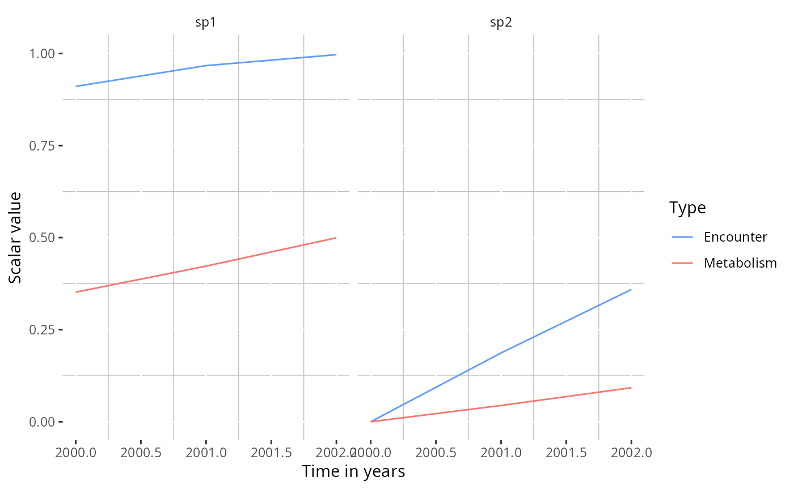
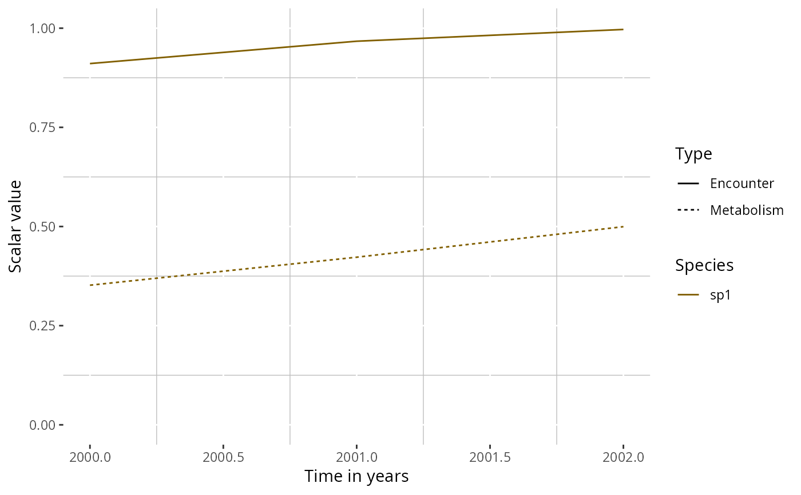
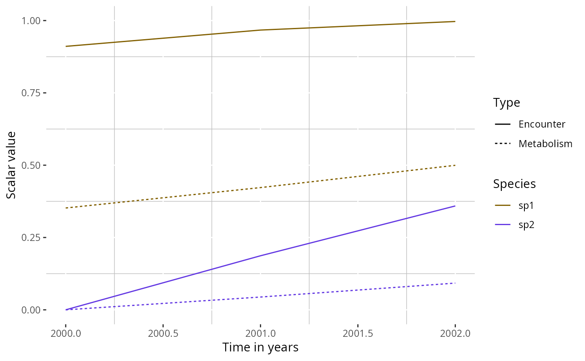

Plot the encounter and metabolism scalars experienced by each species
through time based on the temperature forcing stored in
other_params(params)$ocean_temp.
Arguments
- params
A therMizer-enabled
MizerParamsobject containing species thermal limits and derived scaling parameters.- species
Optional character string giving a single species name to display. It must match one of the species names in
params. Default isNULL, which keeps all species.- species_panel
Logical. If
TRUEandspeciesisNULL, plot each species in a separate panel. Ignored whenspeciesis supplied. Default isTRUE.- return_data
Logical. If
TRUE, return the long-format data frame used to build the plot instead of aggplot2object. Default isFALSE.
Value
Either a ggplot2 object or, when return_data = TRUE, a
data frame with columns Time, Species, Scalar, and
Type.
Examples
# \donttest{
params <- suppressMessages(
mizer::newMultispeciesParams(
data.frame(species = c("sp1", "sp2"), w_inf = c(100, 1000),
k_vb = c(0.3, 0.2), w_mat = c(10, 100),
beta = c(100, 100), sigma = c(2, 2)),
no_w = 16))
params <- suppressWarnings(suppressMessages(
upgradeTherParams(params,
temp_min = c(-2, 5), temp_max = c(12, 18),
ocean_temp_array = c("2000" = 5, "2001" = 6, "2002" = 7))))
# Plot both species in separate panels
plotTherScalar(params)

# Plot a single species
plotTherScalar(params, species = "sp1")

# Overlay both species on one panel
plotTherScalar(params, species_panel = FALSE)

# }